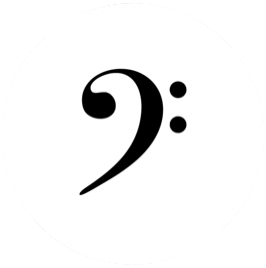

Projects
|  |
Note detection Built a Fourier-Transform-based system (GitHub, interactive demo on Binder) to detect musical notes from a melody and produce a visualization. Designed algorithms for detecting note onsets and mitigating the influence of noise in the Fourier Transforms. |
|
Pinyin labeling Created an app that labels the pinyin pronunciation of Chinese characters. Created pinyin-annotated versions of eight novels by Jin Yong to make the text more accessible to learners of Chinese. The project was featured on The World Journal, the largest Chinese newspaper in the US. |
|
|
Raft Implemented the Raft consensus algorithm (as an independent project in CPSC 426 Distributed Systems) in Go. Added support for state persistence so that a rebooted server can resume replication from its most recent saved state. Implemented the fast log backtracking optimization described in the extended Raft paper. |
|
 |
Shell Built a Bash-like shell (as an independent project in CPSC 323 Systems Programming) in C supporting redirections, pipelines, conditionals, and background commands using fork/exec. |